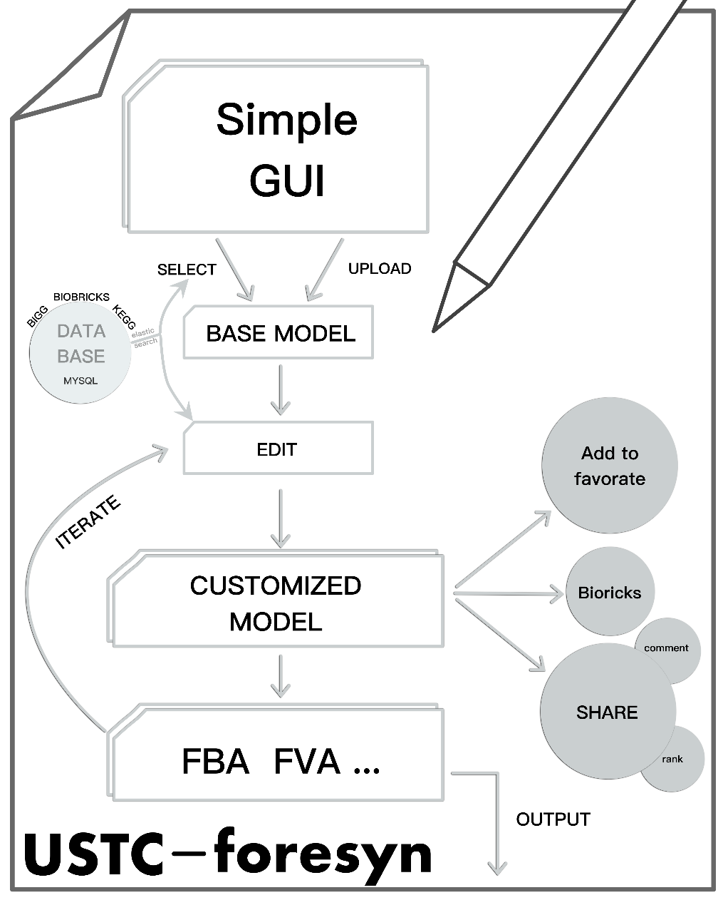
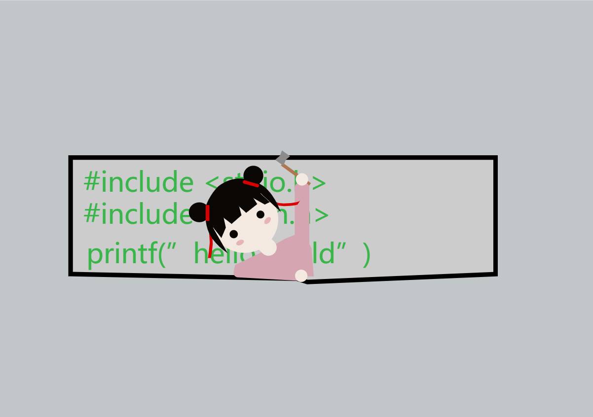
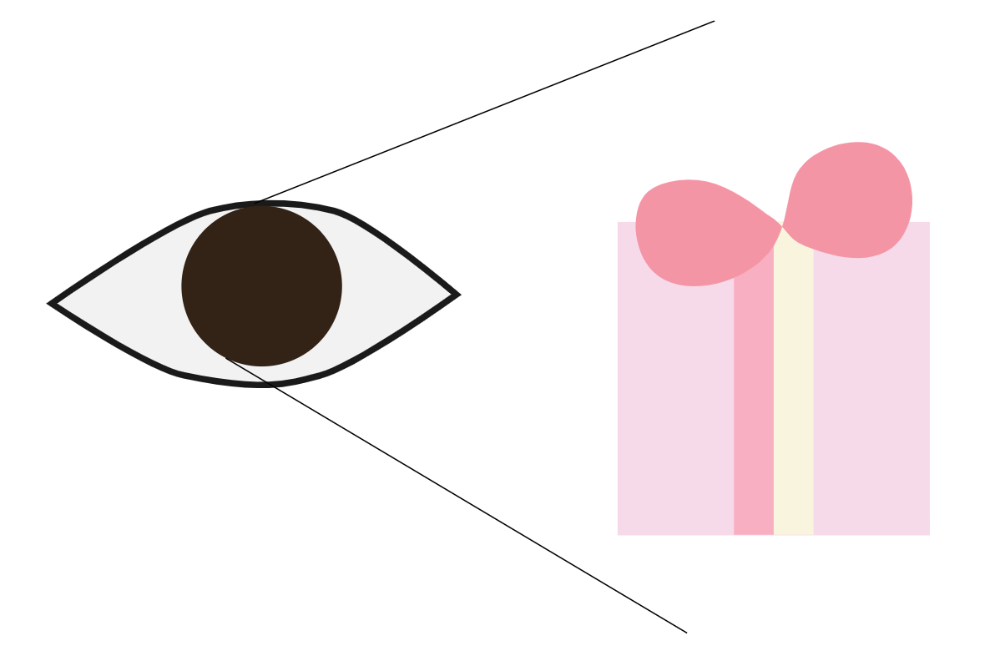
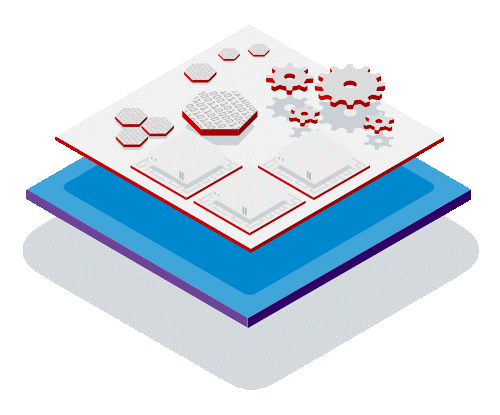
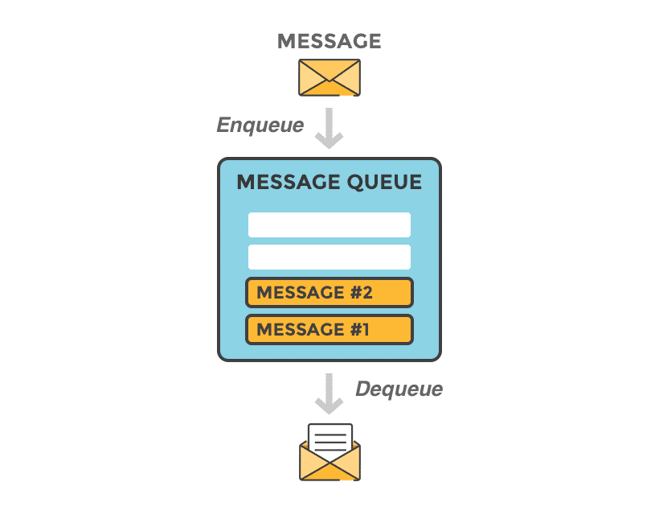
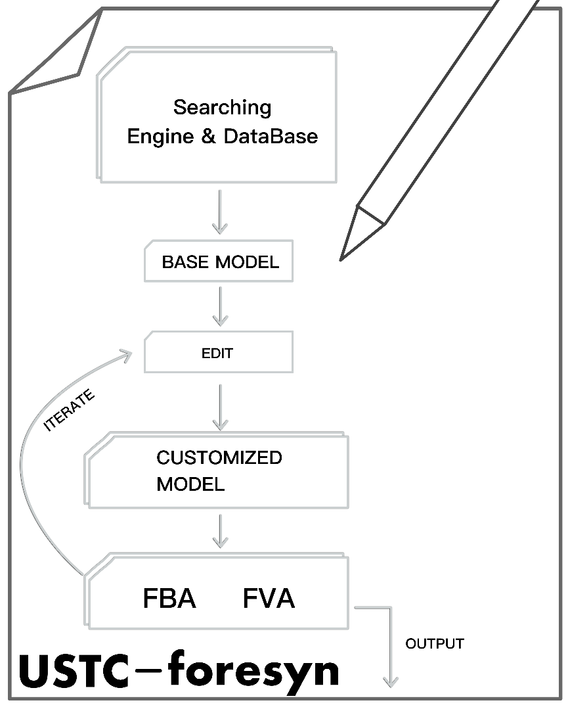
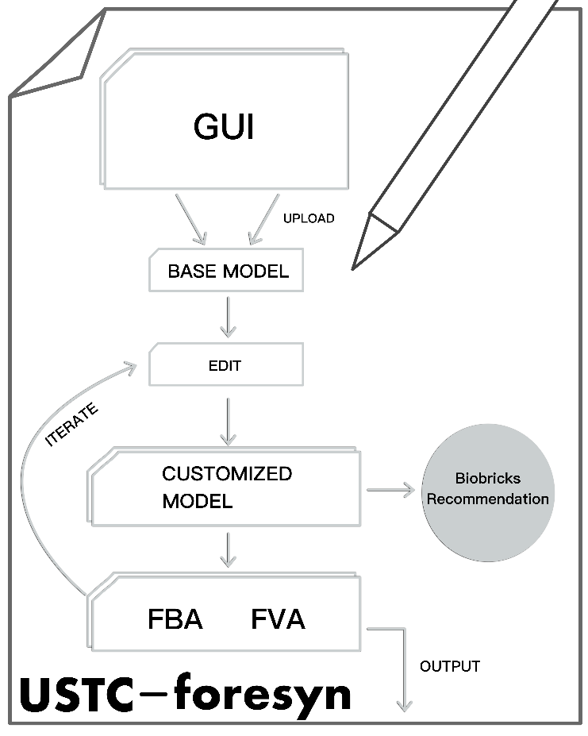
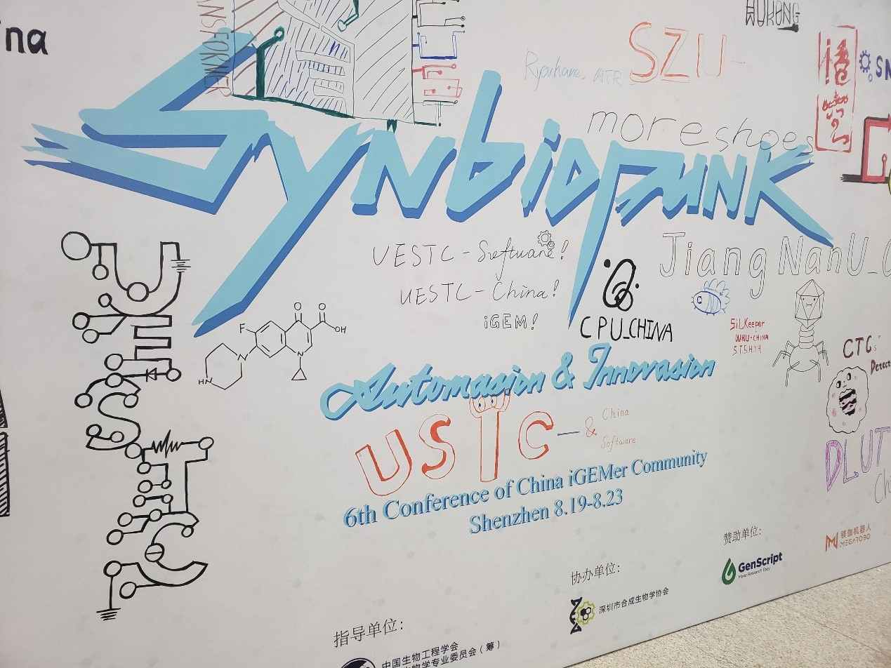
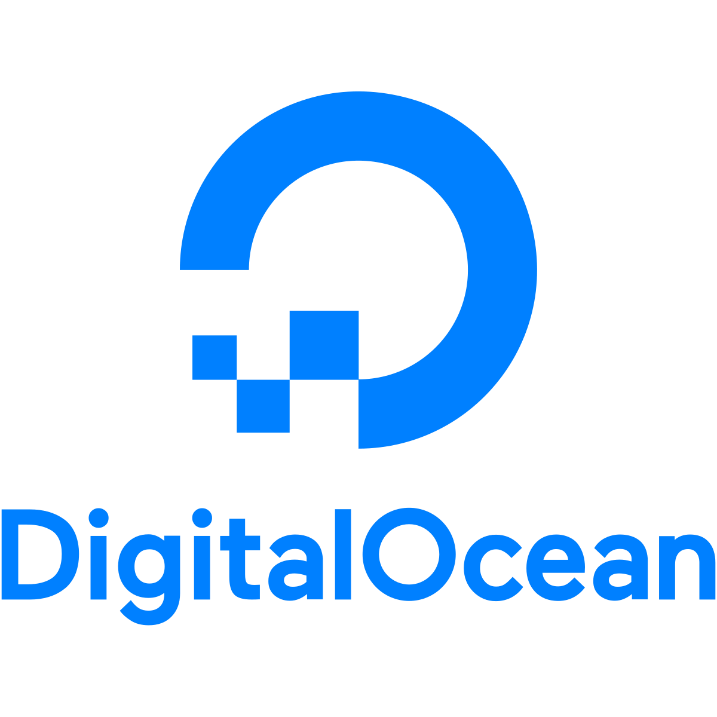
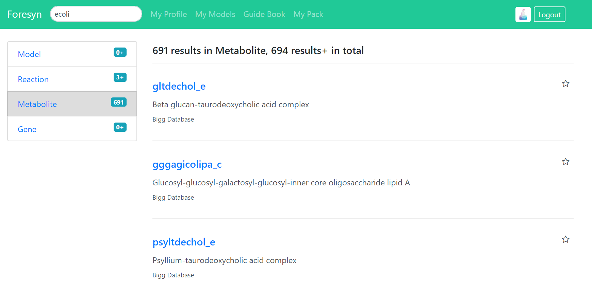

Design
Overview of ForeSyn

Figure: USTC-ForeSyn
Principles
Balance
When we are developing Foresyn, we discovered that there is a contradiction between speed and accuracy. So
our strategy is to use slow but accurate algorithm when searching small datasets, and use fast but less
accurate algorithm when searching large ones.
User-friendly
To be easily used by users who do not know command line thingy, we designed a high-level framework to
lessen the needless works while building models. Also, our databases have been customized with biological
logic.

Figure: No command line
Concise and Clear

Figure: What you see is what you get:
The user can easily see the model built, edit owned model with a concise interface, and get a clear
overview of the analysis output with the graph generated by our software.
Figure：Lessen needless works
Being A Platform
After building customized model and getting the output of analysis, user can easily share it to others
with the unique codes generated to represent the very model. In the page of one model, others can comment,
rank, and also add it to his favorites.

Figure: Being a platform
Lasting Support
Other than the teams who close their service after the competition, we had decided to offer a lasting
support with the cloud server rented for a long time.
Split Computing Process
Our website requires computing large models, and it is quite embarrassing to see users waiting for
browsers for so long, so we use message queues to maintain computing tasks.

Figure: Using Message Queue to split computing process
We split our programs computing models from our website and use message queues to send and receive
information about our computation. A queue is a data structure that stores things waiting to be handled,
and it obeys the "First Come, First Serve" principle. So, we can store our computing tasks in the queue,
and response to users instantly about the progress of his tasks.
Iterations
The iterations of our project were linked closely with our Human Practice works. As we showed clearly in
the page of our HP work, our project has been modified and improved again and again. The whole process is
as follows:
Preliminary product design
After the visit to Huaheng Biotech and acknowledging the problems faced in the real world, we went to have
a meeting with our PI, professor Jiong Hong, who informed us about the existence of FBA. Then we had some
investigation about FBA, only to find that all existing tools at that time lack the ease of use despite
the beauty of its method. It first came into our mind to build a great FBA tool that meets the
requirements of real production environments.
We proposed a revolutionary work flow that would greatly improve efficiency and decrease the complexity of using. In other words, we designed a high-level framework to automatically solve many inner logics and thus simplify the process of analysis.
We first considered to support a wild and customized searching function based on the optimization of databases. After a job done by UESTC-Software in 2018, we wanted to do some upgrade of the scale and the usability of databases, so we did some investigations and documented the defects found in the existing tools.
We proposed a revolutionary work flow that would greatly improve efficiency and decrease the complexity of using. In other words, we designed a high-level framework to automatically solve many inner logics and thus simplify the process of analysis.
We first considered to support a wild and customized searching function based on the optimization of databases. After a job done by UESTC-Software in 2018, we wanted to do some upgrade of the scale and the usability of databases, so we did some investigations and documented the defects found in the existing tools.

Figure: Preliminary product design
Mid-term: A Change of Emphasis
However, our idea hadn’t been fully approved by the SYSU team and their professor. In the meetup with SYSU
team in Guangzhou, China, we introduced our projects to each other. At that time, we devoted ourselves to
optimize our database which was at a great scale and then linking the output to FBA’s input. They put
forward that out idea about optimizing massive databases was not targeted for Synthetic Biology. In other
words, there was a bias in our aim, for the work done to optimize the databases will distract us to design
FBA workflow and its efficiency.
Also, Yonghao Liang, a senior iGEMer of USTC, raised a question that whether we can provide a recommendation of Biobricks when the user end up building his models. For example, if modifications and analysis had been done to the user's model based on E. coli, the researcher can immediately be acknowledged by our system which Biobricks he or she can use. After more discussion, we found it would be a useful function, so we decided to append our system with a micro recommendation system for proper Biobricks.
Also, Yonghao Liang, a senior iGEMer of USTC, raised a question that whether we can provide a recommendation of Biobricks when the user end up building his models. For example, if modifications and analysis had been done to the user's model based on E. coli, the researcher can immediately be acknowledged by our system which Biobricks he or she can use. After more discussion, we found it would be a useful function, so we decided to append our system with a micro recommendation system for proper Biobricks.

Figure: Change of emphasis
CCiC: A giant improvement

Figure: 6th Conference of China iGEMer Community
CCic, which stands for the Conference of China iGEMer Community, is the biggest synthetic biology
conference in China. This year we had a wonderful time there in Shenzhen. We did presentations and our
idea was evaluated by many experts and lovers in the field of synthetic biology. There we were encouraged
to expand our project to a platform, using which users can share their models, see the history of
modifying, and comment on the model pages. It enriched our project, made it closer to a mature one.
Figure: A platform with our useful tools
Service
Cloud Server
We had the computing server rent from DigitalOcean, with great computing power to support our service.

Figure：DigitalOcean
Search
With the aimed & customized databases, we offer a great global search tools in our product.
User can use it to search for Models, Genes, Metabolites, and Reactions.
User can use it to search for Models, Genes, Metabolites, and Reactions.

Figure: searching with keyword ‘ecoli’
Technology
Cobrapy - Constraint-Based Reconstruction and Analysis in Python
COBRA methods are widely used for genome-scale modeling of metabolic networks in both prokaryotes and
eukaryotes. cobrapy is a constraint-based modeling package that is designed to accommodate the biological
complexity of the next generation of COBRA models and provides access to commonly used COBRA methods, such
as flux balance analysis, flux variability analysis, and gene deletion analyses.
Elastic Search
Elasticsearch is a search engine based on the Lucene library. It provides a distributed,
multitenant-capable full-text search engine with an HTTP web interface and schema-free JSON documents.
Figure: Elasticsearch
References
- 1. https://www.digitalocean.com
- 2. https://github.com/opencobra/cobrapy
- 3. https://www.elastic.co/
- 4. https://www.redhat.com/en/technologies/linux-platforms/openstack-platform